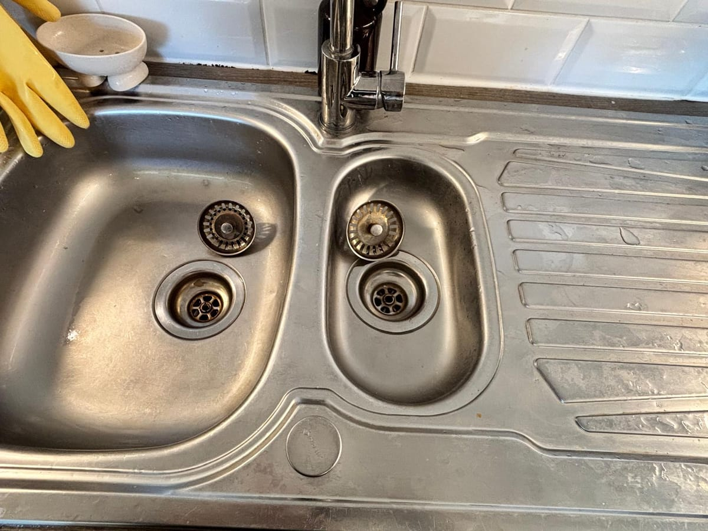

Co tydzień lub co dwa tygodnie, od 2 godzin
Regularne sprzątanie domu w Wimbledonie
Czysty dom co tydzień lub co dwa tygodnie, sprzątany przez tę samą osobę, która go wyceniła. Renata ustala z Tobą plan sprzątania, przynosi własne środki i sprzęt i dopasowuje wizyty do Twojego domu.
Prawie 15 lat doświadczenia · Zaświadczenie DBS · Własne środki i sprzęt

Jak wyglądają wizyty
- Jak często
- Co tydzień lub co dwa tygodnie
- Czas wizyty
- Od 2 godzin, zależnie od domu i planu
- Dostęp
- Możesz być w domu albo Renata może mieć klucz
- Kto sprząta
- Renata, właścicielka, która też wycenia i planuje pracę
- Środki i sprzęt
- Przynoszone na każdą wizytę, w tym odkurzacz i mop
Plan dopasowany do Twojego domu
Przed pierwszą wizytą ustalacie z Renatą, co jest najważniejsze: pomieszczenia, które wymagają uwagi za każdym razem, i prace, które można robić rzadziej.
Plan nie jest sztywny. Jeśli zmieni się Twój rytm dnia albo priorytety, daj znać Renacie, a plan zmieni się razem z nimi.
Przykładowy plan może obejmować
- Blaty kuchenne, płytę i zlew
- Łazienki i toalety
- Odkurzanie dostępnych powierzchni
- Odkurzanie i mycie podłóg
- Listwy przypodłogowe lub okna od wewnątrz co drugą wizytę
Twój plan ustalamy razem z Tobą.
Na początek sprzątanie gruntowne
Jeśli Twój dom dawno nie był dokładnie sprzątany, jednorazowe sprzątanie gruntowne na początek doprowadzi go do porządku, a regularne wizyty będą go w nim utrzymywać. Renata doradzi, czy warto.

Także małe biura i salony
Regularne sprzątanie to nie tylko domy. Renata sprząta też małe lokale, takie jak salony, małe biura i mieszkania na wynajem krótkoterminowy, co tydzień lub co dwa tygodnie. To stanowisko do pedicure pochodzi z jednego z jej zleceń w salonie.
Pytania o regularne sprzątanie
Masz inne pytanie? Napisz do Renaty na WhatsAppie lub zadzwoń.
Czy jest minimalny czas wizyty?
Tak, wizyta trwa co najmniej 2 godziny. Większe domy lub bardziej szczegółowe plany mogą wymagać więcej czasu, a wycena poda, ile.
Czy muszę być w domu?
Nie. Możesz być w domu, jeśli wolisz, albo ustalić, że Renata będzie mieć klucz.
Czy za każdym razem sprząta ta sama osoba?
Deep Cleaning by Renata prowadzi sama Renata, więc osoba, która wycenia Twój dom, jest tą samą osobą, która go sprząta.